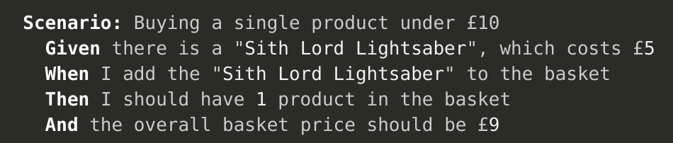

UAT → Behat
From User Acceptance Testing to Automated Testing
Presented by Stephen Cross
Stephen Cross
New England Drupal Camp
Novemember 16 -17, Providence RI
Modern Workflows
Local Dev - Front Build - CI - Deployment - Testing
Eating Healthy
Daily Journaling
Church - Weekly Attendance
Automated Testing
Set Attendance Goals, Not Performance Goals.
FATDAG (aka Mike Daggett)
effective User Acceptance Testing.
What is UAT?
Keep it simple
focus on attendance
Inside ATF
Newsletter for current and past agents.
Implementation
- Private Documenet (Media)
- Categorize Inside ATF
- Newsletter Listing Page
- Protected Pages module
- Hook viewing media to verify access
UAT for Inside ATF
Content Administrator
- Upload PDF
- Mark it Private
- Set category a Inside ATF
- Publish
Script
Add a new document and secure it
() Login as content administrator
() Goto admin/content/file
() Upload PDF file and choose Next
() Select Private and choose Next
() Enter "Apple" for title
() Choose Organization "Inside ATF"
() Enter "This is an apple" for the description
() Choose "Save"
UAT for Inside ATF
General Public
- Can access URL to Inside ATF Page?
- Can access the uploaded document
Script
Verify Inside ATF Document is NOT accessible
() Open an incognito window
() Goto resource-center/inside-atf
() Verify password required
() Goto inside-atf/docs/undefined/insideatf-december2017pdf
() Verify page is NOT visibile
() Goto inside-atf/docs/undefined/insideatf-december2017pdf/download
() Verify document does NOT download
UAT for Inside ATF
Former Agent
- Goto Inside ATF Page
- Login with password
- Can view Newletter Listing?
- Can download uploaded document?
Script
Verify document secured
() Open an incognito window
() Goto resource-center/inside-atf
() Verify password required
() Goto inside-atf/docs/undefined/apple
() Verify access is denied
() Goto resource-center/inside-atf
() Login with password XXXXXXX
() Goto inside-atf/docs/undefined/apple
() Verify the file is accessible
Who tests?
Benefits of UAT
Beyond quality
- Focus on end product early in development
- Ownership
- Cross training
- Documentation
- Stronger team
Testing Culture
Documenting the process
- Keep it simple
- Use system and prcoesses you have
- Part of Jira ticket
Behat
A php framework for autotesting your
business expectations
A php framework for autotesting your
User Acceptance Testing
(kinda)
Context-Action-Outcome

Given I am an anonymous user
Given I am not logged in
Given I am logged in as a user with the :role role(s)
Given I am logged in as a/an :role
Given I am logged in as a user with the :role role(s) and I have the following fields:
Given I am logged in as :name
Given I am logged in as a user with the :permissions permission(s)
Then I should see (the text ):text in the :rowText row
Then I should not see (the text ):text in the :rowText row
Given I click :link in the :rowText row
Then I (should )see the :link in the :rowText row
Given the cache has been cleared
Given I run cron
Given I am viewing a/an :type (content )with the title :title
Given a/an :type (content )with the title :title
Given I am viewing my :type (content )with the title :title
Inside ATF Behat
Parts to Automate
- Critical
- Repetitive
Automation cannot replace domain knowledge, perspective and intuition.
Getting Started Behat Tips
- Tutorial at behat.org, build your commands.
- Drupal Behat Extension - runs outside of Drupal
- Local Build - Test API
- Think through one-time and all the time scripts.
Thank you.
Questions